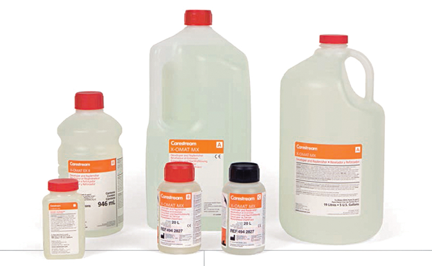

Carestream x-omat
químico revelador

DESCRIPCIÓN:
El nuevo revelador X-OMAT para proceso automático ofrece mayor contraste, mejor visualización del detalle y una tonalidad de imagen más azul.
Las mejoras son especialmente notables cuando se utiliza con la película Carestream Min-R 2000 y Min-R EV en aplicaciones de mamografía.
Este químico se puede utilizar en ambientes dedicados a mamografía y en radiografía general.
Además, su nueva fórmula ayuda a cumplir estrictas normas de regulación ambiental y está catalogado como “no-peligroso” para su transportación.
CARACTERÍSTICAS:
|
Ventajas y beneficios |
|
|
Nueva fórmula mejora la calidad de la imagen. |
Provee una apariencia más nítida y brillante y una tonalidad de imagen más azul que realza el contraste. |
|
Recomendado especialmente para optimizar la imagen de la película Min-R. |
Mayor contraste y tonalidad más azul, lo que permite una mejor visualización del detalle en imágenes de mamografía. |
|
Su fórmula no contiene ácido acético. |
Se elimina el olor ácido que se percibía especialmente durante la preparación y mezcla del revelador. Menos olor, mejores condiciones en el ambiente de trabajo. |
|
No contiene productos químicos peligrosos. |
Diseñado para ayudar a cumplir con las más estrictas normas y regulaciones ambientales. Catalogado como “no-peligroso” por el Departamento de Transporte en E.U.A. |
|
Posibilidad de reducir las tasas de refuerzo recomendadas hasta en 40% en algunas aplicaciones. |
Ahorros en costos y disminución en los desechos del proceso de revelado. |
|
Flexibilidad en el orden en que se vierten las partes durante la preparación y hace que ésta sea más fácil y rápida. |
Reduce la posibilidad de cometer errores en la preparación. |
|
Hace que el revelado sea menos sensible a variaciones en las tasas de refuerzo. |
Permite mantener consistencia y estabilidad en la calidad de imagen, de especial importancia en mamografía. |
DATOS COMPLEMENTARIOS: Si desea obtener más información sobre la familia completa de productos químicos para revelado, película o accesorios Carestream, favor de contactar al representante CARESTREAM de su localidad o a:
CARESTREAM
Teléfono: (33) 3134-6200
o bien, visítenos en: www.carestream.com.mx